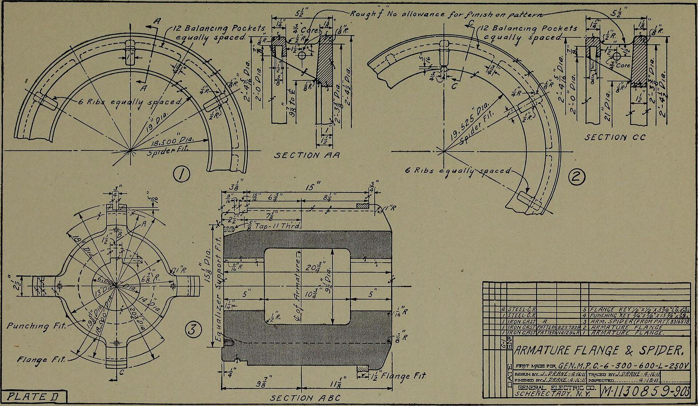
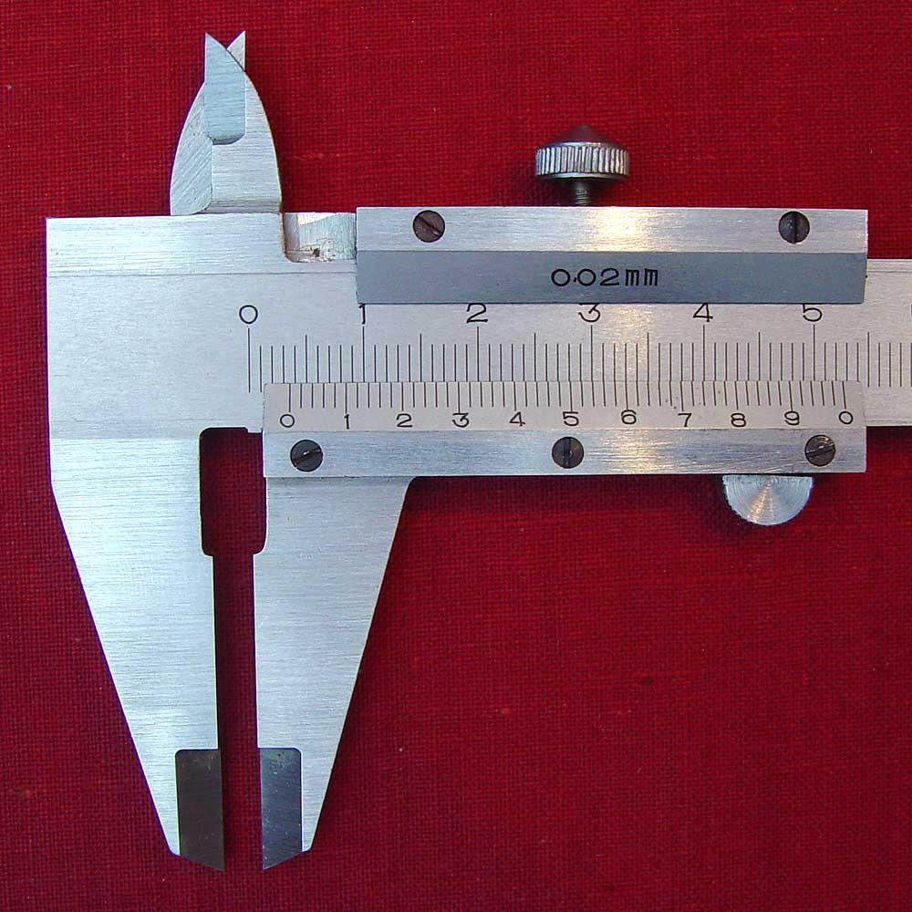
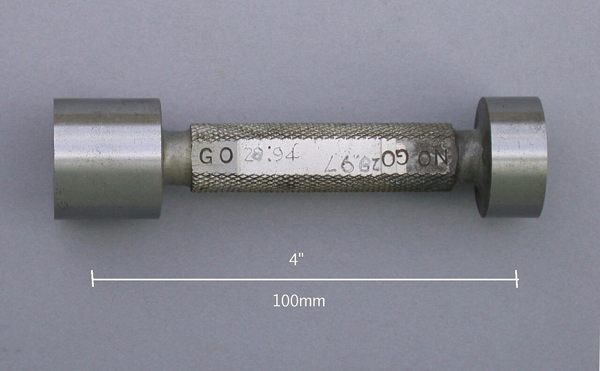
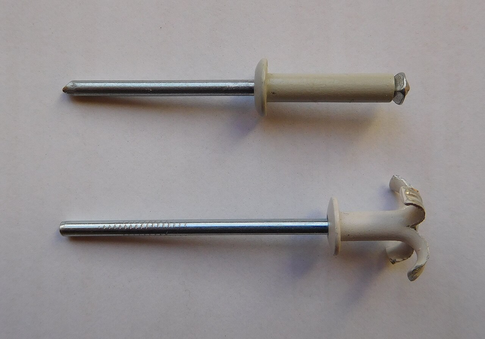
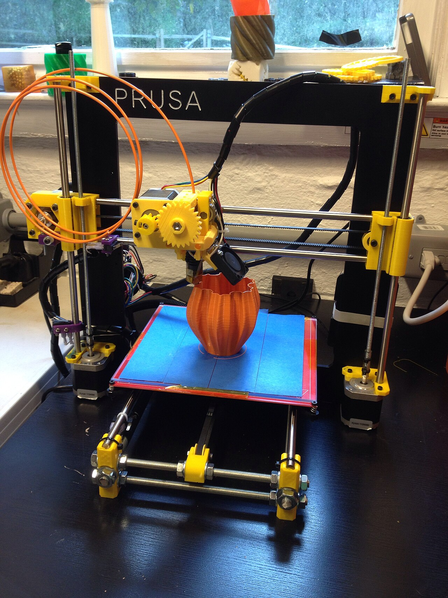
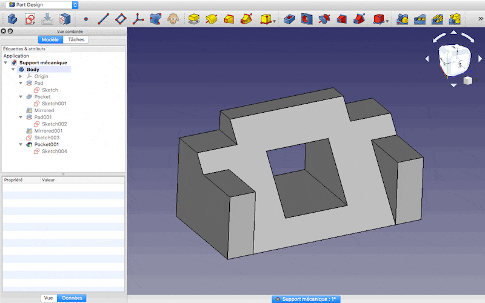
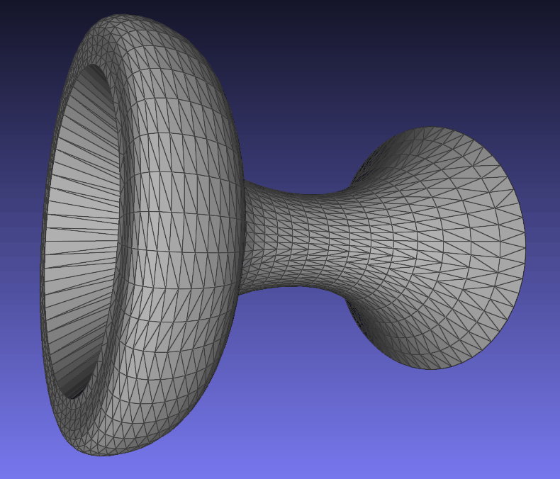
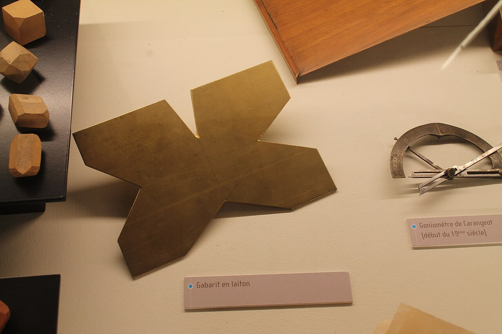
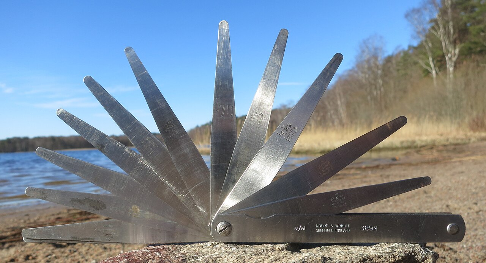
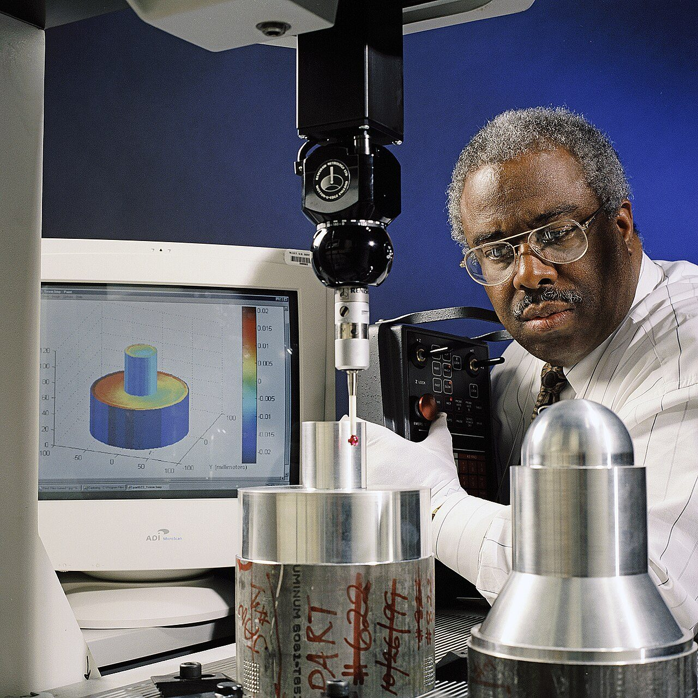

Cuatro veces veinticinco no son cien
Acotas una tapa en cadena, la fabricas y el último agujero se ha ido casi un milímetro. Nadie se ha equivocado: se han sumado cuatro errores diminutos.
De qué va esta unidad
Ya sabes qué vas a construir. Ahora hay que hacerlo, y que encajeVoz sintetizada sobre guión propio. La boca sigue el volumen real de la voz: se mueve cuando habla y se para en los silencios.
En la unidad 1 decidisteis qué ibais a construir y por qué. Ahora empieza la parte en la que se rompen los proyectos: hacerlo.
Vamos con el grupo que ha elegido el aviso de aula mal ventilada. Han repartido el trabajo, que es lo lógico: dos montan la placa con el sensor DHT11 y los tres LED, y otro fabrica la tapa frontal, que es la que se ve desde el aula. En la tapa hay que hacer cuatro agujeros de 6 mm: tres para que asomen los LED y uno para el pulsador de prueba. En la placa, esos cuatro componentes están soldados cada 25 mm.
Así que le pasan un papel al que hace la tapa:
El compañero lo hace bien. Coge la regla, marca el primer agujero a 25 mm del borde. Desde ese, mide otros 25 y marca el segundo. Desde el segundo, otros 25. Y desde el tercero, otros 25. Cuatro agujeros, cuatro medidas, cada una impecable. Taladra.
Llega el día del montaje: los dos primeros LED entran y los dos últimos no.
Nadie se ha equivocado más de dos décimas de milímetro en ninguna medida: dos décimas es menos que el grosor de la raya del lápiz. ¿Cómo puede ser que el cuarto agujero esté casi un milímetro fuera de sitio? ¿De quién es la culpa?
De nadie, y eso es lo incómodo. El fallo no está en las manos: está en el papel. Al decir «cada 25 mm» se pidió que cada agujero se midiera desde el anterior, y eso hace que el error de la primera medida siga ahí cuando se marca la cuarta. Los errores no se compensan: se suman.
Cuatro medidas de 25 con dos décimas de error cada una pueden dejar el último agujero a 0,8 mm de donde tenía que estar. Y un LED de 5 mm por un agujero de 6 solo tiene medio milímetro de margen a cada lado.
En 2.º ya viste que describir una pieza con palabras no funciona: tres personas construyen tres mesas distintas. La conclusión de entonces fue «hay que dibujarlo». Esta sesión añade la mitad que faltaba: no basta con dibujarlo bien, hay que acotarlo bien. Un dibujo precioso con las cotas mal puestas produce piezas que no encajan, y el que fabrica no tiene forma de saberlo.
Dos dibujos que no son lo mismo
Croquis y plano
Croquis: dibujo a mano alzada, sin escala, hecho para pensar y para hablar con los del grupo. Se hace deprisa, se tacha y se rehace. Puede llevar medidas, pero sus proporciones no valen: no se mide sobre un croquis.
Plano (o dibujo de fabricación): dibujo a escala, con instrumentos o con un programa, hecho para que otra persona fabrique la pieza sin preguntarte nada. Es un documento: se archiva, se firma y se le pone fecha.
La prueba para saber si tu plano está terminado es siempre la misma: ¿podría fabricarlo alguien que no ha estado en ninguna de vuestras reuniones? Si para entenderlo hace falta que tú estés al lado, no es un plano todavía.
Lo que lleva un plano para poder fabricarse
- Las vistas necesarias, y solo esas. Una pieza plana con agujeros pasantes se resuelve con una vista y el espesor apuntado.
- Las cotas: los números, en milímetros y sin escribir la unidad.
- La escala (1:1, 1:2, 2:1…). Las cotas son siempre la medida real, aunque el dibujo esté reducido.
- El material y el espesor.
- El cajetín, abajo a la derecha: qué pieza es, quién la ha dibujado, cuándo y qué versión es. Sin la versión, alguien fabricará el plano viejo. Pasa siempre.
Las reglas de acotación, y por qué existen
Las normas de acotación (en España, la UNE-EN ISO 129) parecen una lista de manías. No lo son: cada regla está ahí porque alguien fabricó mal una pieza por no seguirla.
Las que importan de verdad
- Las cotas van fuera de la pieza, sobre líneas auxiliares finas que salen del contorno y no lo tocan (se dejan 1-2 mm). Dentro no se lee y se confunde con el dibujo.
- Cada medida, una sola vez. Si la misma cota aparece en dos vistas y un día cambiáis una y se os olvida la otra, tenéis dos planos en el mismo papel.
- Ninguna cota de más. Si pones 25 + 25 + 25 + 25 y además el total de 100, estás dando una orden que no se puede cumplir: las cuatro medidas reales nunca van a sumar 100 exactos. Es el error más frecuente, y el más dañino, porque parece que ayuda.
- Los agujeros se acotan por su centro y por su diámetro, con el símbolo ∅ delante. Nunca por el borde del agujero: el borde no se puede medir con nada.
- Cotas que se puedan medir con lo que hay. Si en el taller solo hay una regla apoyada en el canto de la pieza, acota desde ese canto. Una cota entre dos centros de agujero es preciosa en el papel y no se puede comprobar con una regla.
- Las cifras se escriben encima de la línea de cota y se leen desde abajo o desde la derecha: nunca del revés.
Y ahora, la regla que da nombre a la sesión
De dónde se mide: tres maneras
Acotación en cadena (o en serie): cada cota arranca donde terminó la anterior. 25 · 25 · 25 · 25. Es la que sale sola con una regla, y es la que acumula error.
Acotación desde una referencia (en paralelo, o con línea de referencia común): todas las cotas se miden desde la misma cara. 25 · 50 · 75 · 100. Cada agujero solo carga con su error.
Mixta: la de verdad. Se acota desde una referencia lo que tiene que encajar con otra pieza, y en cadena lo que da igual que se mueva un poco.
La referencia se elige, no sale sola. Se elige la cara que de verdad manda: la que apoya, la que se atornilla, la que toca a la otra pieza.
Abajo están las dos tapas, fabricadas por el mismo operario, con exactamente los mismos cuatro errores. Lo único que cambia es desde dónde se midió. Pulsa «Otra pieza» varias veces antes de sacar conclusiones.
Acotada en cadena
+0,00 mm
Acotada desde el borde
+0,00 mm
Cuánto se acumula, con números. Si cada medida se puede equivocar como mucho e, y encadenas n cotas, el último punto puede estar a n · e de su sitio. Con 4 cotas y e = 0,2 mm, eso es 0,8 mm. Midiendo todo desde la misma cara, el peor caso se queda en e = 0,2 mm, y no crece aunque añadas veinte agujeros más.
En la práctica no suele darse el peor caso, porque unos errores tiran para arriba y otros para abajo. Lo típico es que en cadena la desviación crezca con la raíz del número de cotas: √n · e. Con 4 cotas, √4 = 2, o sea el doble. Mejor que ocho veces, pero sigue siendo peor que acotar desde el borde. Y sobre todo: no lo controlas. Una pieza te sale bien y la siguiente no.
Conviene sacar la conclusión buena, que no es «la cadena es mala». La cadena dice «lo que me importa es la distancia entre estos dos» y la referencia dice «lo que me importa es dónde está cada uno respecto al borde». Acotar es decir qué es lo que no se puede mover. Por eso no se puede acotar una pieza sin saber con quién va a encajar.
De dónde sale todo esto
La acotación normalizada no nació en una clase de dibujo: nació en las fábricas, cuando la pieza ya no la hacía la misma persona que la había pensado. Mientras el que diseña y el que lima son el mismo, un croquis basta. En cuanto el plano viaja —a otra nave, a otra ciudad, a otro país—, todo lo que el plano no diga se convierte en una pieza mal hecha.

La misma pieza acotada de dos maneras distintas, con el lápiz encima del papel. Nadie del proyecto lo ha visto entero: están comprobados el título y el canal, no el contenido. El vídeo no se carga hasta que lo pulsas, y se reproduce sin cookies de seguimiento. Si la red del centro bloquea YouTube, ábrelo directamente aquí. Es obra de su autor y no forma parte del material publicado bajo la licencia de esta página.
Primera parte · Medir en la escena (6 min)
Con la escena de las dos tapas, dejad el error en ±0,20 mm y pulsad Otra pieza diez veces seguidas. Anotad en una tabla, para cada intento:
- La desviación del cuarto agujero en cadena.
- La desviación del cuarto agujero desde el borde.
- ¿Cuántas veces de diez ha fallado cada una?
- Pulsad Peor caso. ¿Cuánto sale en cadena? Comprobadlo con la cuenta n · e, sin la escena.
- Subid el error hasta que también falle la de la derecha. ¿Qué valor hace falta? ¿Por qué ese y no otro?
Segunda parte · Vuestra pieza (10 min)
Elegid una pieza plana de vuestro proyecto que lleve al menos tres agujeros: la tapa del aviso de ventilación, el soporte del depósito del riego o la base de la lámpara. Dibujadla dos veces en la libreta, a lápiz y con regla, a escala 1:1 si cabe:
- Una vez acotada en cadena.
- Otra vez acotada desde la referencia que hayáis elegido… y escribid por qué esa cara y no otra. Esa frase vale tanto como el dibujo.
Las dos con su ∅ en los agujeros, su espesor apuntado y su cajetín.
Tercera parte · La prueba del plano (4 min)
Intercambiad la libreta con otro grupo, sin decir ni una palabra. Cada grupo escribe en el plano que le ha tocado:
- Una cosa que no puede fabricar porque falta una cota.
- Una cota que sobra o está repetida.
- Una cota que no podría medir con una regla.
Cómo se evalúa
- La tabla de los diez intentos y el peor caso comprobado a mano (3 puntos).
- Los dos planos completos, con ∅, espesor y cajetín (4 puntos).
- La justificación de la referencia elegida (2 puntos).
- Las tres pegas encontradas en el plano del otro grupo (1 punto).
- ¿Por qué una pieza acotada en cadena acumula error y una acotada desde una referencia no?
Ver respuesta
Porque en cadena cada cota arranca donde acabó la anterior, así que se lleva encima todos los errores anteriores. Desde una referencia, cada cota sale de la misma cara, que no se ha movido, y solo carga con su propio error.
- Cuatro cotas de 25 mm, con ±0,2 mm de error en cada una. ¿Dónde puede acabar el cuarto agujero?
Ver respuesta
En el peor caso, a 4 · 0,2 = 0,8 mm de su sitio. Acotando desde el borde, el peor caso es 0,2 mm, y no crece aunque pongas más agujeros.
- Si ya has puesto 25, 25, 25 y 25, ¿por qué no puedes poner además el total de 100?
Ver respuesta
Porque sería una cota de más: cinco órdenes para cuatro medidas. Las cuatro reales nunca van a sumar 100 exactos, así que el que fabrica tiene que desobedecer alguna, y no le has dicho cuál. Se pone lo que manda, y lo demás se deja fuera (o entre paréntesis, como cota informativa).
- ¿Qué cara de la pieza se elige como referencia?
Ver respuesta
La que de verdad manda en el montaje: la que apoya, la que se atornilla o la que toca a la otra pieza. No la que quede más cómoda de dibujar. Acotar es decir qué es lo que no se puede mover.
Dos piezas de ocho milímetros que no encajan
Nadie ha fabricado nunca una pieza de 8,000 mm. La pregunta buena no es cuánto mide, sino entre qué dos números te vale.
Cambiamos de proyecto. En el riego automático, una de las versiones no lleva bomba: lleva un depósito que bascula, y un servo que lo inclina cuando toca regar. El depósito gira sobre un eje de 8 mm que apoya en dos agujeros del soporte.
El plano está perfecto: acotado desde la referencia, con su ∅, su espesor y su cajetín. Pone ∅8 en el eje y ∅8 en el agujero. Se reparten el trabajo entre dos grupos y vuelven las piezas.
En el grupo de Iván, el eje baila: entra solo, se sale solo y el depósito cabecea tanto que derrama agua fuera de la maceta.
Los dos grupos tenían el mismo plano, que pedía 8 mm, y los dos han hecho 8 mm. ¿Quién se ha equivocado? Escríbelo antes de seguir.
Nadie. Y aquí está la idea que cuesta tragar la primera vez:
Nunca en la historia se ha fabricado una pieza de 8,000 mm. Ni con una lima, ni con un torno, ni con la máquina más cara que exista. Lo que sale de cualquier máquina es 8,03, o 7,98, o 8,0007. Siempre hay un decimal más abajo en el que la pieza deja de medir lo que pedías. Si mides con más precisión, lo que encuentras no es el 8,000: es otro error más pequeño.
Así que escribir ∅8 en un plano donde dos piezas tienen que encajar es, literalmente, no haber dicho nada. La pregunta buena no es «¿cuánto mide?». Es «¿entre qué dos números me vale?».
Las palabras, con la pieza delante
- Medida nominal: el número redondo del que se habla. Los 8 mm del eje. Es una etiqueta, no una medida: puede que ninguna pieza real la tenga.
- Desviación superior y desviación inferior: cuánto se puede pasar y cuánto se puede quedar corto, respecto de la nominal. Se escriben como ∅8 +0,022 0.
- Medida máxima y mínima: nominal más cada desviación. Aquí, 8,022 y 8,000.
- Tolerancia: la diferencia entre las dos, 0,022 mm. Es la anchura del permiso que le das al taller. Siempre es positiva.
- Micra (µm): la milésima de milímetro. Las tolerancias se hablan en micras porque en milímetros sale todo lleno de ceros. 0,022 mm = 22 µm.
Regla que ahorra discusiones: la tolerancia no es un fallo que se permite, es una decisión de diseño. Apretarla cuesta dinero y tiempo; dejarla ancha cuesta que la pieza no valga. Elegirla es tu trabajo, no el del que fabrica.
El ajuste, que no vive en ninguna de las dos piezas
Un ajuste es lo que pasa cuando juntas una pareja de piezas: el eje y su agujero. Dos cuentas lo deciden todo:
Juego máximo = Agujeromáx − Ejemín
Juego mínimo = Agujeromín − Ejemáx
Y según cómo salgan:
- Ajuste con juego: el juego mínimo es positivo. El agujero es siempre mayor que el eje. Entra sin forzar y gira. Es el del eje del depósito.
- Ajuste con apriete: el juego máximo es negativo. El eje es siempre mayor. Hay que meterlo a presión, y luego no se mueve. Es el de un rodamiento en su alojamiento.
- Ajuste indeterminado: el juego mínimo es negativo y el máximo, positivo. Unas veces entra suelto y otras aprieta, y no puedes saber cuál te va a tocar.
Y una consecuencia que conviene ver ya:
Juego máx − Juego mín = tolerancia del agujero + tolerancia del eje
O sea: lo que varía el ajuste es la suma de los dos permisos. Apretar solo uno de los dos sirve de poco; hay que mirar la pareja.
Al banco. Mueve las cuatro desviaciones y mira cambiar el tipo de ajuste. Empieza por los preajustes hechos, y deja para el final el que pone «a ojo, con regla y sierra».
El agujero del soporte
El eje
Lo que puede salir de la máquina
El ajuste que sale
—
El indeterminado es el peor sitio donde estar, y es donde acaban casi todos los proyectos de clase sin saberlo. No es que las piezas salgan mal: es que el mismo plano produce piezas que giran y piezas que no, y no hay manera de saber cuál te toca hasta tenerla en la mano. Un proyecto que funciona «a veces» casi siempre tiene un ajuste indeterminado dentro.
Por qué el agujero se deja quieto y se mueve el eje. Fíjate en los preajustes: el agujero empieza casi siempre en +0. No es casualidad. Los agujeros se hacen con brocas y escariadores, que vienen en medidas fijas: tienes la de 8 y la de 8,5, y no hay nada en medio. El eje, en cambio, se lima, se tornea o se compra en la medida que quieras. Así que se fija el agujero y se juega con el eje. Eso se llama sistema de agujero único, y es el que se usa casi siempre.
Hay un sistema internacional entero para nombrar esto con dos caracteres — H7/g6 y compañía, la norma ISO 286—, donde la letra dice dónde se coloca la zona respecto a la línea cero y el número dice cuánto mide. En 4.º no hace falta manejarlo: basta con entender qué hay debajo, que es exactamente lo que acabas de mover con los mandos.
Con qué se mide eso, y qué puedes prometer
Hay una trampa que hay que desmontar antes de seguir. Puedes escribir ±0,02 mm en un plano con mucha seguridad, pero si en el taller solo hay una regla, no tienes forma de saber si la pieza cumple. Y una tolerancia que no se puede comprobar no es una tolerancia: es un deseo.

Lo que puedes prometer con lo que tienes
| Con qué mides | Aprecia | Tolerancia que puedes comprobar |
| Regla de acero | 0,5 mm | ±1 mm, y con optimismo |
| Pie de rey | 0,02 mm | ±0,1 mm cómodo; ±0,05 apurando |
| Micrómetro | 0,01 mm | ±0,02 mm |
| Calibre pasa / no pasa | — | la que le hayan hecho, y sin leer nada |
Los números de esta tabla son orientación de taller, no una norma.

Por qué hizo falta inventar esto
Durante casi toda la historia, las cosas se hacían por parejas. El armero limaba el cañón, limaba la pieza que iba dentro y las ajustaba la una a la otra hasta que iban bien. Funcionaba, y funcionaba muy bien. Pero tenía un precio escondido: si se rompía una pieza, la de repuesto no valía, porque estaba hecha para otro conjunto. Había que llevar el aparato entero a un taller y volver a ajustar.
- 1785, París. El armero Honoré Blanc enseña una cosa que parece un truco de feria: desmonta varios mecanismos de disparo, mezcla las piezas en cajones, coge piezas al azar y monta mecanismos que funcionan. Entre el público está Thomas Jefferson, entonces embajador de Estados Unidos en Francia, que se queda tan impresionado que escribe a su gobierno para contarlo.
- La idea se bautiza como intercambiabilidad, y cambia la manera de fabricar: cada pieza se hace contra el plano, no contra la pieza de al lado. Para que eso pueda funcionar hay que decir, por primera vez, cuánto se puede desviar cada una. Ahí nace la tolerancia.
- 1841. Joseph Whitworth propone en Inglaterra una sola rosca para todos: mismo perfil, mismo ángulo, mismo paso para cada diámetro. Hasta entonces cada taller hacía la suya, y un tornillo solo entraba en su tuerca. Es el primer estándar industrial que se impone de verdad, y es la razón de que hoy una tuerca M3 comprada en cualquier sitio entre en un tornillo M3 comprado en cualquier otro.
Merece la pena ver lo que esto significa para vosotros. Vuestro servo SG90, vuestros tornillos M3, vuestra varilla de 8 y vuestros cables Dupont vienen de fábricas distintas, de países distintos, que no se han hablado nunca. Y encajan. Eso no es magia ni suerte: es que todas fabrican contra la misma norma, con su tolerancia escrita. La intercambiabilidad es una de las tecnologías más invisibles y más importantes que existen.
Va más allá de lo que se pide aquí —entra en la notación ISO completa—, pero el porqué de los tres tipos de ajuste está muy bien contado. Nadie del proyecto lo ha visto entero: están comprobados el título y el canal, no el contenido. El vídeo no se carga hasta que lo pulsas, y se reproduce sin cookies de seguimiento. Si la red del centro bloquea YouTube, ábrelo directamente aquí. Es obra de su autor y no forma parte del material publicado bajo la licencia de esta página.
Primera parte · Las cuentas, a mano (7 min)
Sin la escena, en la libreta. Un eje y un agujero de nominal 8 mm:
- Agujero: desviaciones +0 / +0,022
- Eje: desviaciones −0,028 / −0,013
- Escribid las cuatro medidas (agujero máx y mín, eje máx y mín).
- Calculad juego máximo y juego mínimo. ¿Qué tipo de ajuste es?
- Comprobad que juego máx − juego mín es igual a la suma de las dos tolerancias.
- Ahora subid el eje 30 micras (las dos desviaciones). ¿Sigue girando? ¿Qué tipo de ajuste ha pasado a ser?
Comprobad los cuatro resultados en la escena. Si no coinciden, uno de los dos está mal: averiguad cuál antes de seguir.
Segunda parte · Vuestra pareja de piezas (8 min)
Buscad en vuestro proyecto dos piezas que tengan que encajar: el eje del depósito y su soporte, la tapa del aviso y su caja, el brazo de la lámpara y su casquillo. Decidid:
- ¿Tenéis que girar, deslizar o no moveros nunca?
- Elegid las cuatro desviaciones y escribid las dos cotas como irían en el plano.
- Calculad los dos juegos y decid qué ajuste os sale.
- ¿Podéis comprobar esa tolerancia con lo que hay en el aula? Si la respuesta es no, ensanchadla hasta que sí, y anotad la nueva.
Tercera parte · Si hay pie de rey (5 min)
Medid tres veces la misma varilla, asentándola bien entre las bocas y anotando las tres lecturas. ¿Salen iguales? La diferencia entre vuestra lectura más alta y la más baja es vuestra incertidumbre, y ninguna tolerancia más estrecha que eso os la podéis creer.
Cómo se evalúa
- Las cuatro cuentas del ejercicio, con el tipo de ajuste (4 puntos).
- Las dos cotas de vuestras piezas, bien escritas (3 puntos).
- La decisión de si se puede comprobar, y el ajuste de la tolerancia (3 puntos).
- ¿Por qué poner «∅8» a secas en dos piezas que tienen que encajar es no haber dicho nada?
Ver respuesta
Porque ninguna máquina fabrica un 8,000: lo que sale es algo cercano. Si no dices entre qué dos números te vale, el taller puede darte un 8,3 y un 7,7 y haber cumplido tu plano. La medida útil no es un número, es un intervalo.
- Agujero de 8,000 a 8,022 y eje de 7,972 a 7,987. ¿Qué ajuste sale?
Ver respuesta
Juego máximo = 8,022 − 7,972 = 0,050 mm. Juego mínimo = 8,000 − 7,987 = 0,013 mm. Los dos positivos, así que es un ajuste con juego: gira siempre, salgan como salgan las piezas.
- ¿Qué tiene de malo un ajuste indeterminado?
Ver respuesta
Que el mismo plano produce piezas que entran sueltas y piezas que aprietan, sin que puedas saber cuál te toca. No es que estén mal hechas: está mal elegido el ajuste. Un proyecto que funciona «a veces» suele tener uno de estos dentro.
- ¿Por qué se fija el agujero y se juega con el eje?
Ver respuesta
Porque los agujeros salen de brocas y escariadores de medidas fijas y el eje se puede limar, tornear o comprar en la medida que quieras. Es más barato mover lo que se puede mover. Se llama sistema de agujero único.
- Tu tolerancia es ±0,02 mm y en el aula solo hay una regla. ¿Qué pasa?
Ver respuesta
Que esa tolerancia no existe: no puedes comprobar si la pieza cumple, así que no puedes aceptarla ni rechazarla. Una tolerancia que no se puede medir con lo que hay es un deseo, no una especificación. O consigues un pie de rey, o la ensanchas.
Lo que se pega no se repara
El tornillo aguanta 170 kilos y la unión se rompe con quince. No falla el tornillo: falla el material de alrededor del agujero, y eso se calcula.
Tercer proyecto, la lámpara de estudio que se ajusta sola. El brazo se une a la base, y el grupo lo resuelve como se resuelve todo cuando quedan diez minutos de clase: un chorro de silicona caliente. Queda firme, aguanta, y se van a casa contentos.
Tres semanas después hay que cambiar el LED, que va dentro del brazo. Para llegar a él hay que abrir la unión. Y para abrir la unión hay que romper la pieza.
La silicona hizo su trabajo: unió las dos piezas y aguantó. Entonces, ¿fue una mala decisión? ¿Y qué habría hecho falta saber antes de pegar para decidirlo bien?
Hacía falta saber una cosa que no es técnica: si esa unión se iba a tener que abrir alguna vez. Y eso no se descubre montando: se decide dibujando.
Pero hay una segunda sorpresa en esta sesión, y es de números. Supongamos que en vez de pegar hubieran puesto un tornillo M3. Miras la tabla y ves que un tornillo M3 de acero aguanta del orden de 1700 newtons, que son unos 170 kilos colgando.
Y sin embargo, esa unión se rompe. Con el brazo impreso en PLA de 3 mm de espesor, la unión de un tornillo falla alrededor de los 500 newtons: la tercera parte. Y si el brazo fuera de DM, con 110.
El tornillo no se rompe. Lo que se rompe es el material que hay alrededor del agujero. Y eso se calcula.
Dos familias, y la pregunta que las separa
Uniones desmontables: se pueden abrir y volver a cerrar sin estropear nada, y tantas veces como haga falta. Tornillo con tuerca, tornillo rosca-chapa, perno, pasador, chaveta, brida, imán, encaje a presión.
Uniones fijas: para abrirlas hay que destruir algo, la unión o la pieza. Pegado, soldadura, remachado, ajuste con apriete, soldadura de plástico.
La pregunta para elegir no es cuál aguanta más. Es: ¿esto se va a tener que abrir alguna vez? Para cambiar una pila, arreglar una avería, reciclar el aparato al final o simplemente corregir un error de montaje. Si la respuesta es sí, la decisión ya está tomada.
Qué falla de verdad cuando una unión se rompe
Una unión no falla «en general». Falla por un sitio concreto, y hay que calcular los dos candidatos y quedarse con el peor.
1 · El elemento de unión, cortado por el plano de la junta:
τ = F / A, con A = π · d² / 4
Un tornillo M3 tiene A = π · 3² / 4 = 7,07 mm². Un acero corriente de clase 4.8 aguanta a cortadura del orden de 240 N/mm², así que 7,07 · 240 ≈ 1700 N por tornillo.
2 · El material alrededor del agujero, aplastado por el tornillo:
σ = F / (d · t)
d es el diámetro del tornillo y t el espesor de la pieza. El área que recibe el empuje es el rectángulo que proyecta el tornillo contra la pared del agujero. Un PLA impreso aguanta ahí unos 55 N/mm²; en 3 mm de espesor, 55 · 3 · 3 = 495 N. Ese es el número que manda.
3 · Si es pegado, lo que trabaja es toda el área de contacto:
τ = F / área pegada
Y el área la eliges tú al dibujar el solape. Es lo único gratis de toda la sesión: alargar un solape no cuesta dinero.
En el banco están las tres a la vez, sobre las mismas dos piezas. Empieza bajando el espesor y mira quién se cae primero.
Tornillos M3 con tuerca
—
Remaches ciegos ∅3,2
—
Pegado en todo el solape
—
En vuestros proyectos, el tornillo nunca es el problema. Un M3 de acero aguanta 1700 N y vuestras piezas son de plástico o de tablero de 3 mm. Para que el tornillo llegara a enterarse haría falta que la pieza aguantara antes, y no lo hace. Por eso, cuando una unión de clase se rompe, lo que ves es el agujero ovalado o un trozo de borde arrancado, no un tornillo partido.
Esto tiene una consecuencia práctica que cuesta cuatro céntimos: si la unión va justa, no pongas un tornillo más gordo, pon una arandela. La arandela no toca el agujero, pero reparte el apriete de la cabeza sobre mucha más superficie de la pieza, que es justo lo que se estaba hundiendo.
Una simplificación que conviene declarar. Aquí se supone que la carga la lleva el tornillo apoyado contra el borde del agujero. En una unión bien apretada, una parte la lleva el rozamiento entre las dos piezas, y entonces aguanta más. Calcular sin contar con ese rozamiento es lo que se hace siempre que no se puede garantizar el apriete, y deja el resultado del lado seguro.
Reglas de taller para que la unión no se caiga tonta
- Distancia al borde: el centro del agujero, al menos a 2 diámetros del canto en plástico o metal, y a 3 en madera o tablero. Más cerca, el tornillo arranca un trozo de borde en vez de aplastar el agujero, y eso pasa de golpe y sin avisar.
- Arandela siempre bajo la tuerca y, en material blando, también bajo la cabeza.
- Si vibra, se afloja. Un motor vibra. Tuerca autoblocante, arandela de presión o una gota de laca de uñas en la rosca.
- No rosques directamente en DM: se deshace. Tornillo pasante con tuerca, o inserto.
- En PLA impreso, mejor pasante con tuerca que roscado en el plástico: la rosca impresa se pela a la segunda vez que abres.
- Dos tornillos, no uno. Con uno solo, la pieza gira alrededor de él.
Lo fijo, visto de cerca

Lo que se pega no se repara, y eso tiene consecuencias fuera del taller. La misma decisión que acabas de tomar para el brazo de la lámpara la toman todos los días en las fábricas de móviles, de auriculares y de electrodomésticos. Pegar es más rápido, más barato, queda más fino y no se ven tornillos. Y convierte una batería gastada en un aparato entero a la basura.
Por eso la Unión Europea lleva años empujando el derecho a reparar: si un aparato no se puede abrir, tampoco se puede arreglar ni separar para reciclar, y entonces el problema deja de ser tuyo y pasa a ser de todos. Esto se mira despacio en la unidad 3, cuando toque el ciclo de vida de los materiales, y vuelve en la unidad 8, con el impacto. Quédate con esto: la manera de unir dos piezas es una decisión ambiental, aunque no lo parezca.
Y no es una regla ciega: hay uniones que deben ser fijas. Un remache no se afloja con las vibraciones, una soldadura no deja entrar agua y un ajuste con apriete no se sale solo. Lo que no vale es pegar por comodidad algo que se va a tener que abrir.
La misma pregunta de esta sesión, con piezas de verdad y a escala de taller metálico. Nadie del proyecto lo ha visto entero: están comprobados el título y el canal, no el contenido. El vídeo no se carga hasta que lo pulsas, y se reproduce sin cookies de seguimiento. Si la red del centro bloquea YouTube, ábrelo directamente aquí. Es obra de su autor y no forma parte del material publicado bajo la licencia de esta página.
Primera parte · El mapa (7 min)
Listad todas las uniones de vuestro proyecto: pieza con pieza, pieza con placa, placa con caja, caja con pared. Suelen salir entre seis y diez. Para cada una, una fila en la libreta:
| Qué une | ¿Se abrirá alguna vez? | Tipo elegido | Por qué |
La columna del medio se contesta con un caso concreto: «sí, para cambiar la pila», «no, nunca». No vale «puede ser».
Segunda parte · La unión crítica (8 min)
De todas, elegid la que más fuerza aguanta y calculadla en la libreta, con todos los pasos:
- ¿Qué fuerza tiene que aguantar? Estimadla, pero decid de dónde sale el número (el peso de lo que cuelga, un empujón de 20 N, el tirón de alguien que se engancha con el cable…).
- Con el material y el espesor que tenéis, calculad el aplastamiento: σ · d · t.
- Comparadlo con lo que aguanta el tornillo. ¿Quién falla primero?
- Sacad el coeficiente de seguridad y comprobadlo en la escena.
Si sale por debajo de 2, arregladlo, y hay tres maneras: más tornillos, más espesor o cambiar a pegado con más solape. Calculad las tres y decid cuál elegís.
Tercera parte · La prueba de los cinco minutos (5 min)
Mirad vuestro mapa y contestad por escrito: ¿se puede sacar la placa Arduino del aparato montado en menos de cinco minutos, sin romper nada? Si la respuesta es no, cambiad una unión de la lista y decid cuál. Lo vais a agradecer el día que se os quede colgado el programa.
Cómo se evalúa
- El mapa completo, con la columna del porqué contestada (3 puntos).
- El cálculo de la unión crítica, con todos los pasos y las unidades (4 puntos).
- Las tres maneras de arreglarlo, calculadas, y la elegida (2 puntos).
- La prueba de los cinco minutos, contestada y con la consecuencia (1 punto).
- ¿Cuál es la pregunta que decide si una unión debe ser fija o desmontable?
Ver respuesta
¿Esto se va a tener que abrir alguna vez? Para cambiar una pila, reparar una avería, corregir un montaje o separar los materiales al reciclar. No es una pregunta de resistencia: es de ciclo de vida.
- Un tornillo M3 aguanta 1700 N y la unión se rompe con 500. ¿Qué ha pasado?
Ver respuesta
Ha fallado la pieza, no el tornillo. El material se aplasta alrededor del agujero: σ = F / (d · t). Con PLA de 55 N/mm² y 3 mm de espesor, 55 · 3 · 3 = 495 N. Manda siempre el menor de los dos.
- ¿Por qué doblar el solape de una junta pegada dobla lo que aguanta?
Ver respuesta
Porque en el pegado τ = F / área, y el área es el solape por el ancho. Doble área, doble fuerza. Y a diferencia de poner más tornillos, alargar un solape no cuesta nada: es la mejor manera que hay de ganar resistencia dibujando.
- ¿Por qué no se pone el agujero pegado al borde de la pieza?
Ver respuesta
Porque entonces el tornillo no aplasta el agujero: arranca el trozo de borde que tiene delante, de golpe y sin avisar. La regla de taller es dejar 2 diámetros en plástico o metal y 3 en madera.
La misma tapa, tres maneras de hacerla
Mismo plano, tres presupuestos. Y solo una de las tres te da la cota que pediste —spoiler: ninguna te da la del eje—.
Última pieza del recorrido, y volvemos a la tapa del aviso de ventilación con la que empezó la unidad. Ya está bien acotada, ya sabes qué tolerancia le puedes prometer y ya sabes cómo se va a sujetar. Queda lo último: hacerla.
En el aula hay tres maneras. Y en clase, la conversación es siempre la misma:
Hay una impresora 3D en el departamento y diez grupos en clase. Una tapa como esa tarda unos 30 minutos de máquina. ¿Cuánto tarda en estar impresa la tapa del último grupo de la cola? Haz la cuenta antes de seguir.
Cinco horas. Es decir: casi dos semanas de clases de Tecnología, y eso si nada se despega de la cama, que se despega. La misma tapa, cortada con la sierra, está terminada al final de la sesión de hoy, y cortada con el láser, en cinco minutos.
Pero el tiempo y el dinero son la parte fácil. Lo importante viene ahora, y es lo que convierte esta sesión en una sesión de diseño y no de taller: cada técnica te obliga a dibujar la pieza de otra manera. No se elige la técnica al final, mirando el plano terminado. Se elige antes, porque decide lo que puedes dibujar.
Lo que hay en el aula, y qué hace cada cosa
- Medir y marcar: regla, escuadra, gramil, punta de trazar y granete. El granete hace una picadura donde va el agujero, y sin él la broca patina y el agujero sale donde quiere. Es el paso que más se salta y el que más piezas estropea.
- Cortar: sierra de marquetería (curvas, despacio), segueta y sierra de arco (rectos), cúter y regla metálica (cartón pluma, PVC fino), cortadora láser si el centro la tiene.
- Taladrar: taladro de columna mucho mejor que de mano, porque entra perpendicular. La pieza siempre sujeta con el sargento, nunca con la mano.
- Rebajar y afinar: lima, papel de lija de grano grueso a fino. Es lo que convierte una pieza cortada en una pieza que encaja, y es donde se ajusta lo que la máquina no clavó.
- Fabricación aditiva: la impresora 3D, que no quita material sino que lo añade capa a capa. Es la única de la lista que puede hacer formas huecas por dentro.
La cuenta del taladro: a qué vueltas va cada broca
Una broca no se define por las vueltas, sino por la velocidad de corte Vc: lo deprisa que pasa el filo por el material, en metros por minuto. Cada material tiene la suya, y de ahí salen las revoluciones:
n = 1000 · Vc / (π · D)
n en revoluciones por minuto, Vc en m/min y D el diámetro de la broca en milímetros.
Ejemplo. Un agujero de ∅6 en contrachapado, con Vc = 40 m/min:
n = 1000 · 40 / (π · 6) = 40000 / 18,85 = 2122 rpm
Y ahora lo que de verdad hay que llevarse: D está dividiendo. Con la broca de 12 mm, el mismo material pide la mitad de vueltas, 1061 rpm. Por eso una broca gorda a las vueltas de una fina quema la madera, funde el plástico y se estropea: el filo va al doble de velocidad aunque el motor gire igual.
Orientación de Vc para brocas de acero rápido (HSS), en m/min: madera y tablero 30-60, plásticos 30-50, aluminio 60-100, acero 20-30. Son valores de taller, no una norma.
Una cosa más sobre los agujeros, que enlaza con la sesión 2
Un agujero taladrado siempre sale más grande que la broca: entre una y dos décimas, porque la broca cabecea un poco al entrar. Nunca sale más pequeño.
De ahí salen dos consecuencias prácticas: que el agujero se acota siempre hacia arriba (+0 / +0,1 y no ±0,05), y que si quieres una medida fina hay que taladrar por debajo y terminar con un escariador, que es una broca sin punta que solo repasa la pared.
Al banco. Es la misma tapa de la sesión 1, con las mismas cotas, hecha de tres maneras. Mira las tres columnas a la vez: no hay una ganadora.
Sierra de marquetería y taladro
—
Corte láser
—
Impresión 3D
—
Diseñar para fabricar. Esto es lo que hay que llevarse de la sesión, y no es una lista de máquinas: es que el dibujo cambia según quién lo vaya a hacer.
- Si va a la sierra: líneas rectas y ángulos abiertos. Cada curva la pagas en minutos, y un rincón en ángulo recto por dentro no se puede serrar: hay que taladrarlo primero. Pon un redondeo en las esquinas interiores y ya está resuelto.
- Si va al láser: todo tiene que ser plano. No hay rebajes a media altura ni piezas con relieve: lo que sale es un perfil recortado. A cambio, las curvas son gratis. Y hay que descontar del dibujo la sangría del haz, unas dos décimas que se evaporan: si dibujas una ranura de 3,0 para una pieza de 3,0, la ranura sale de 3,2 y queda floja.
- Si va a la impresora: puedes hacer formas que no salen de ninguna otra manera, pero (1) lo que vuele más de 45° pide soporte, que luego hay que arrancar y deja la cara fea; (2) la pieza es un montón de capas pegadas, y se parte por donde se pegan, así que hay que orientarla de modo que la fuerza no intente separarlas; y (3) los agujeros verticales salen un poco pequeños, así que se dibujan dos o tres décimas de más.
Y la regla que engloba a las tres: la pieza más barata es la que no hay que fabricar. Antes de dibujar nada, mira si eso ya existe: una escuadra, un perfil, una varilla calibrada, una caja de conexiones. En un proyecto de ocho sesiones, cada pieza que te ahorras es media sesión que dedicas a que funcione.
La máquina que se imprime a sí misma

Seguridad, que no es un trámite
- Gafas siempre que haya viruta, taladro o corte. Un ojo no se repara.
- La pieza, sujeta: sargento o mordaza. Una pieza pequeña sujeta con la mano en el taladro se convierte en una hélice.
- Pelo recogido, mangas cerradas, nada colgando del cuello ni de las muñecas.
- La broca y la pieza recién taladrada queman. Y la boquilla de la impresora va a 200 °C.
- Se limpia con un cepillo, nunca con la mano ni soplando.
- Con el láser: extracción encendida y tapa cerrada, y nunca cortar PVC —suelta cloro— ni nada que no sepas qué es.
El ejemplo más claro de que el diseño depende de cómo se fabrique: la misma pieza, girada, aguanta otra cosa. Nadie del proyecto lo ha visto entero: están comprobados el título y el canal, no el contenido. El vídeo no se carga hasta que lo pulsas, y se reproduce sin cookies de seguimiento. Si la red del centro bloquea YouTube, ábrelo directamente aquí. Es obra de su autor y no forma parte del material publicado bajo la licencia de esta página.
Primera parte · Las vueltas del taladro (4 min)
En la libreta, con la fórmula y todos los pasos:
- ¿A qué revoluciones hay que taladrar un ∅8 en contrachapado, con Vc = 40 m/min?
- ¿Y un ∅3 en el mismo material?
- El taladro del aula tiene poleas para 500, 1000, 1500 y 2500 rpm. ¿Cuál elegís para cada uno, y por qué se elige por debajo y no por encima?
Segunda parte · Elegir técnica, con números (6 min)
Coged la pieza más grande de vuestro proyecto y metedla en la escena con sus medidas de verdad. Rellenad esta tabla en la libreta:
| Técnica | Coste | Tus manos | La máquina | Tolerancia |
| A mano | ||||
| Láser | ||||
| Impresión 3D |
Y decidid, con dos números de la tabla en la frase. Si en el centro no hay láser, decidlo y elegid entre las otras dos: un «no se puede» razonado vale igual.
Tercera parte · Rehacer el dibujo (5 min)
Ahora lo importante. Volved al plano de la sesión 1 y escribid dos cambios que hay que hacerle para que se pueda fabricar con la técnica que habéis elegido. Por ejemplo: redondear las esquinas interiores para la sierra, quitar un rebaje que el láser no puede hacer, agrandar dos décimas los agujeros para la impresora, girar la pieza para que las capas no trabajen a favor de la rotura…
Cada cambio, con la razón técnica al lado. Esto es lo que se evalúa de verdad.
Cómo se evalúa
- Las revoluciones de las dos brocas, con los pasos, y la polea justificada (3 puntos).
- La tabla de las tres técnicas con vuestras medidas (3 puntos).
- La decisión con dos números en la frase (1 punto).
- Los dos cambios en el plano, con su razón técnica (3 puntos).
Lo que tiene que haber quedado de estas cuatro sesiones
1. Marcas cuatro agujeros midiendo cada uno desde el anterior, 25 mm cada vez, y te equivocas como mucho 0,2 mm en cada medida. En el peor caso, ¿dónde puede acabar el cuarto?
2. ¿Por qué está mal poner en el plano 25 + 25 + 25 + 25 y además el total de 100?
3. Un agujero va de 8,000 a 8,022 mm y su eje, de 7,972 a 7,987. ¿Qué ajuste es?
4. ¿Qué quiere decir que un ajuste sea indeterminado?
5. El juego de un ajuste varía entre 0,013 y 0,050 mm. Si aprietas la tolerancia del agujero de 22 a 11 micras y no tocas el eje…
6. Un tornillo M3 de acero aguanta unos 1700 N. Lo pones en una pieza de PLA de 3 mm, que aguanta 55 N/mm² de aplastamiento. ¿Con cuánta fuerza falla la unión?
7. ¿Por qué un remache es una unión fija?
8. Una junta pegada con 20 mm de solape aguanta 2400 N. Si doblas el solape a 40 mm…
9. ¿A qué revoluciones va una broca de ∅8 en contrachapado, con una velocidad de corte de 40 m/min?
10. Necesitas un agujero de ∅8 con tolerancia de 22 micras para que un eje gire justo. Con lo que hay en el aula…
Se corrige en tu propio navegador: no se envía ni se guarda nada. Las explicaciones aparecen al corregir, tanto en las que aciertes como en las que falles.
- ¿Por qué se dice que la técnica de fabricación no se elige al final?
Ver respuesta
Porque cambia el dibujo. Si va a la sierra, fuera las curvas y redondeo en los rincones; si va al láser, todo plano y descontando la sangría; si va a la impresora, cuidado con los voladizos y con la orientación de las capas. Elegirla al final obliga a redibujar.
- ¿Por qué una broca gorda tiene que ir a menos revoluciones que una fina?
Ver respuesta
Porque lo que importa es la velocidad del filo, y el filo de una broca gorda recorre más camino en cada vuelta. En n = 1000 Vc / (π D), el diámetro divide: al doble de diámetro, la mitad de vueltas.
- ¿Por qué el tiempo de máquina no es lo mismo que el tiempo de tus manos?
Ver respuesta
Porque la máquina se comparte. Cinco minutos tuyos preparando el archivo y treinta de impresora parecen treinta y cinco… hasta que hay diez grupos y una sola impresora, y entonces el plazo real es de cinco horas. En un proyecto con fecha, el cuello de botella manda más que el coste.
- ¿Cuál es la pieza más barata de todas?
Ver respuesta
La que no hay que fabricar. Antes de dibujar, mira si existe: una escuadra, un perfil, una varilla calibrada, una caja. Cada pieza que te ahorras es media sesión para que el aparato funcione, que es de lo que va el curso.
Lectura del tema
Una sesión entera dedicada a leer y contestar. 30 párrafos numerados: cada uno lee el suyo en voz alta, en orden. Después, diez preguntas por escrito. Cuenta de dónde sale todo esto: un armero francés que mezcló las piezas en cajones, un inglés que decidió cómo tenían que ser todas las roscas del mundo, y lo que pasa cuando dos fábricas hacen la misma pieza con dos definiciones distintas del metro.
El servo mide 23 y no 20
Con las medidas escritas a mano, cambiar un dato es repasar el modelo entero y rezar. Con parámetros, es mover un número. Y hay un tercer sitio donde el agujero encoge: al exportarlo.
Se acabó el lápiz. A partir de aquí la unidad sigue una sola pieza del proyecto principal, el riego automático: el soporte del depósito, esa U de dos flancos y una base por la que pasa el eje sobre el que bascula el depósito, y que lleva el servo metido en medio. La vais a modelar hoy, a cortar en la sesión que viene, a montar en la siguiente y a defender en la última.
¿Por qué hace falta modelarla, si el plano de la sesión 1 ya estaba bien? Por una razón muy tonta: las máquinas no leen planos. El láser quiere un fichero de líneas y la impresora quiere un fichero de sólido. El plano es para las personas.
Así que el grupo abre Tinkercad y hace lo que hace todo el mundo: arrastra cajas, las estira hasta que se parecen al dibujo, escribe las medidas a mano en cada una y las coloca a ojo. Y queda bien. En la pantalla no se distingue de un modelo hecho por un ingeniero.
Tres días después llega el paquete con los servos. Y el servo que ha llegado mide 23 mm de ancho, no los 20 que habíais supuesto.
Es un cambio de tres milímetros en una pieza de tu proyecto. ¿Cuántas medidas del modelo hay que corregir? Escribe tu número antes de seguir, y escribe también cómo lo sabrías.
La respuesta honrada es: no lo sabes. En un modelo hecho de cajas con medidas escritas a mano no hay forma de saber cuáles dependían de ese 20. Hay que repasarlas una a una, acordarse de por qué se puso cada número, y rezar. El hueco de dentro cambia; si cambia el hueco, cambia el ancho de la base; si cambia el ancho de la base, cambia el largo de la varilla del eje… y si a alguien se le escapa una, esa pieza sale mal y no te enteras hasta el montaje.
Hay otra manera de modelar, y es la de esta sesión: en vez de escribir cada medida, se deduce de las anteriores. El ancho de la base no es 28,6: es hueco más dos espesores. Entonces cambiar el servo de 20 a 23 es mover un número, y las demás medidas se recalculan solas y sin fallo.
Tres maneras de guardar una pieza en un ordenador
Malla, sólido y paramétrico
Malla (ficheros STL, OBJ, 3MF): la pieza es una piel de triángulos. Dentro no hay ninguna medida: no se le puede preguntar «¿cuánto mide este agujero?», porque el agujero no existe como tal, solo hay triángulos puestos en círculo. Es lo que comen las máquinas.
Sólido por operaciones (Tinkercad, FreeCAD, Onshape, Fusion): la pieza no es una forma, es la lista de lo que has hecho: un prisma, menos un cilindro, más un redondeo. Esa lista se llama árbol, y se puede volver atrás y cambiar el paso 2 sin tocar el 3 ni el 4.
Paramétrico: encima de lo anterior, cada medida puede ser una fórmula que usa otras. Mueves una y se mueve la pieza entera.
Regla para saber en cuál estás: ¿puedes cambiar una medida sin volver a dibujar? Si la respuesta es no, tienes una malla aunque el programa te enseñe un sólido precioso.
Modelar por operaciones: cinco verbos y nada más
- Extruir: coges un perfil plano y lo haces crecer en altura. Es el verbo principal: casi todas vuestras piezas son un perfil recortado con un espesor.
- Revolucionar: giras un perfil alrededor de un eje. Todo lo que sea redondo por fuera —una polea, un casquillo— sale de aquí.
- Restar: metes un cuerpo dentro de otro y lo conviertes en hueco. Así se hacen todos los agujeros. En Tinkercad se llama «agujero» y luego Agrupar.
- Unir: dos cuerpos pasan a ser uno solo.
- Repetir: simetría y matriz. Los dos flancos del soporte son el mismo reflejado, no dos piezas dibujadas dos veces. Si son lo mismo, se modelan una vez.
El orden importa, y esa es la diferencia entre el árbol y un dibujo. Si redondeas la esquina y después taladras el agujero al lado, al mover el agujero el redondeo sigue donde estaba. Al revés, no.
Qué es parámetro y qué se deduce
Esta es la decisión de la sesión, y no es de programa: es de diseño.
Parámetro es lo que te imponen desde fuera y tú no puedes cambiar: el ancho del servo que habéis comprado, el diámetro de la varilla que venden, el espesor del tablero que hay en el almacén. Y una más, que sí eliges tú: la holgura de la sesión 2.
Todo lo demás se deduce. Si una medida la puedes escribir como cuenta de otras, no la escribas como número. En el soporte:
- ∅ del agujero = ∅ del eje + holgura (sesión 2)
- distancia del centro al canto = 3 × ∅ del agujero (sesión 3: dos diámetros en plástico o metal y tres en madera o tablero, y el soporte es de contrachapado)
- lado del flanco = 2 × esa distancia
- hueco interior = ancho del servo + 2 holguras
- ancho de la base = hueco + 2 espesores
Cinco fórmulas, y el modelo entero cuelga de cuatro números. Tinkercad no tiene fórmulas, así que en Tinkercad esa tabla se escribe en la libreta y se aplica a mano —que sigue siendo infinitamente mejor que no tenerla—. FreeCAD y Onshape sí las tienen.
Al banco. A la izquierda está el modelo que se recalcula; a la derecha, las piezas que ya se cortaron con las medidas del primer día. Pulsa Llega el servo de verdad antes que nada.
Modelo vivo · cada medida es una fórmula
—
Modelo tonto · medidas escritas a mano
—
Al exportarlo a STL
—
Por qué encoge el agujero, con la cuenta delante. Un fichero STL solo sabe guardar triángulos planos, así que al exportar, el programa sustituye cada círculo por un polígono de N lados metido dentro de él. El polígono toca la circunferencia en los vértices y por el medio de cada lado se queda hacia dentro.
Lo que de verdad deja pasar ese agujero no es su diámetro D, sino la distancia entre dos lados opuestos:
∅ útil = D · cos(180° / N)
Con D = 8,30 y N = 16 salen 8,14 mm: de las tres décimas de holgura que pediste te quedan 1,4. Con N = 8 salen 7,67, y el eje de 8 ya no pasa. El agujero es el mismo en el modelo; lo que ha cambiado es cómo se ha guardado.
De ahí salen las dos costumbres del taller: subir la resolución al exportar (en Tinkercad, exportar en «alta calidad») y agrandar los agujeros dos o tres décimas en el modelo, que es lo que ya se dijo en la sesión 4 sin explicar por qué.
Ojo: esto le pasa al STL, no al corte 2D. Los ficheros del láser —DXF y SVG— sí saben guardar arcos de verdad. Allí el problema es otro, y ya lo viste: la sangría del haz.
El árbol, visto por dentro


Antes de darle al botón de exportar
- Unidades en milímetros y escala 1:1. La mitad de los desastres de impresión son piezas exportadas en pulgadas.
- Para el láser: SVG o DXF, con los contornos cerrados, sin líneas dobles (dos veces la misma raya = dos cortes) y con lo que se corta y lo que se graba en capas o colores distintos.
- Para la impresora: STL, en alta resolución, y con la pieza cerrada: si la malla tiene un agujero, el laminador no sabe qué es dentro y qué es fuera.
- Guarda el modelo, no solo el STL. El STL no se puede volver a editar de verdad.
- Versión y fecha en el nombre del fichero. soporte_v3_2026-10-14.stl, no soporte_bueno_final_este_si.stl.
De dónde sale todo esto
La idea de que un dibujo del ordenador guarde relaciones y no solo puntos es de 1963: Ivan Sutherland presentó en el MIT un programa llamado Sketchpad en el que se dibujaba con un lápiz de luz sobre una pantalla y se le podía decir al ordenador «estas dos líneas son perpendiculares» o «estos dos segmentos miden lo mismo». Al mover una, las demás se recolocaban solas para seguir cumpliendo lo prometido. Es el antepasado de todo lo que has usado hoy.
Que eso llegara a la industria tardó otros veinticinco años: en 1987, Pro/ENGINEER fue el primer programa comercial en el que las piezas se hacían con un árbol de operaciones y medidas atadas unas a otras. Antes de eso, cambiar una cota en un modelo de ordenador costaba casi lo mismo que cambiarla en el papel.
La herramienta que vais a usar, de cero. Lo que aquí interesa es la parte de agrupar y vaciar: es la resta que hace los agujeros. Nadie del proyecto lo ha visto entero: están comprobados el título y el canal, no el contenido. El vídeo no se carga hasta que lo pulsas, y se reproduce sin cookies de seguimiento. Si la red del centro bloquea YouTube, ábrelo directamente aquí. Es obra de su autor y no forma parte del material publicado bajo la licencia de esta página.
Primera parte · Las dos cuentas de la escena (6 min)
- Con los valores de partida, pulsad Llega el servo de verdad. ¿Cuántas de las siete medidas deducidas cambian? Anotad cuáles.
- Mirad la caja roja: ¿por qué hay que volver a cortar? Copiad el número de milímetros de interferencia.
- Bajad las facetas a 8. Calculad a mano, con la calculadora, 8,30 × cos(180°/8) y comprobadlo con la escena. Repetid con 16 y con 32.
- ¿Cuántas facetas hacen falta como mínimo para que un eje de 8 pase por un agujero de 8,30? La escena lo dice: explicad por qué ese número y no otro.
Segunda parte · Vuestra tabla de parámetros (5 min)
En la libreta, antes de tocar el ordenador. Dos columnas:
| Parámetros (te los imponen) | Deducidas (fórmula) |
Mínimo cuatro parámetros y cinco fórmulas. Si una medida no la sabéis poner como fórmula, preguntaos de qué depende: casi siempre depende de algo.
Tercera parte · Tinkercad (9 min)
- Modelad una pieza de vuestro proyecto (la del riego, la tapa del aviso o el brazo de la lámpara), con sus agujeros hechos por resta y las piezas repetidas por simetría.
- Exportad STL en alta calidad y SVG.
- La prueba de verdad: cambiad un parámetro (el ancho del servo, el espesor del tablero) y cronometrad cuánto tardáis en dejar el modelo bien otra vez. Anotad el tiempo y qué medidas habéis tenido que tocar.
Cómo se evalúa
- Las cuatro respuestas de la escena, con la cuenta del coseno hecha a mano (3 puntos).
- La tabla de parámetros y fórmulas (3 puntos).
- La pieza modelada y los dos ficheros exportados (2 puntos).
- El cronómetro de la prueba y la lista de lo que hubo que tocar (2 puntos).
- ¿Qué diferencia hay entre una malla (STL) y un modelo por operaciones?
Ver respuesta
La malla es una piel de triángulos: no guarda medidas, ni agujeros, ni el orden de lo que hiciste, así que no se puede editar de verdad. El modelo por operaciones guarda la lista de lo que hiciste, y por eso puedes volver al paso 2 y cambiarlo. El STL es para la máquina; el modelo, para ti.
- ¿Cómo se decide si una medida es un parámetro o se deduce?
Ver respuesta
Es parámetro lo que te imponen desde fuera y no puedes cambiar: el servo que habéis comprado, la varilla que venden, el espesor del tablero que hay. Más la holgura, que la eliges tú. Todo lo demás, si se puede escribir como cuenta de otras medidas, se deduce.
- Un agujero de ∅10 se exporta con 12 facetas. ¿Qué diámetro deja pasar de verdad?
Ver respuesta
∅ útil = 10 · cos(180°/12) = 10 · 0,966 = 9,66 mm. Se han perdido 34 centésimas por el camino, y eso es más que casi cualquier holgura que hayas pedido. Por eso los agujeros se agrandan en el modelo y se exporta en alta resolución.
- ¿Por qué se guarda el modelo y no solo el STL?
Ver respuesta
Porque el STL no se puede volver a editar: no tiene medidas ni historia. Es como guardar el PDF y tirar el documento. El día que cambie el servo, con el modelo mueves un número y con el STL empiezas de cero.
Se acabó el tablero con dos piezas por cortar
Las piezas ocupaban 29 950 mm² y el tablero tenía 60 000. Nadie ha cortado mal: han cortado en el orden que fue saliendo.
Lunes, taller. El grupo del riego llega con el fichero de la sesión anterior, una plancha de contrachapado de 4 mm y muchas ganas. Empiezan por la pieza más grande, la tapa de la caja, y la marcan donde cae el lápiz, más o menos por el medio. La cortan. Luego el frente de la caja, que ya no cabe al lado, así que se va a una esquina. Luego los dos flancos, cada uno donde queda hueco.
A la quinta pieza no hay ningún trozo entero donde quepa la siguiente. Quedan dos piezas por cortar y el tablero está lleno de recortes con forma de nada.
Las diez piezas del soporte y de su caja suman 29 950 mm². El retal era de 300 × 200, o sea 60 000 mm². Sobraba la mitad del tablero. ¿Cómo puede ser que no quepan?
Porque el sitio que sobra no está junto. Dos recortes de 50 × 200 no son un hueco de 100 × 200: son dos trozos separados por un corte, y una pieza no se puede partir en dos. El tablero no se gasta por su superficie, se gasta por dónde cortas.
Y hay una segunda cosa, más fina. Los dos flancos tenían que ser iguales. Como se marcaron por separado —uno midiendo con la regla y el otro midiendo con la regla otra vez—, salieron con 1,5 mm de diferencia. En la sesión 1 ya viste por qué: cada medida trae su propio error. Lo nuevo es que aquí ese error se podía haber evitado del todo sin medir mejor.
Así que antes del primer corte hay tres cosas que hay que tener decididas: la lista de lo que hay que hacer, dónde va cada pieza en el tablero, y en qué orden se hace cada operación. Ninguna de las tres se improvisa.
1 · La lista de materiales, o despiece
Una fila por pieza distinta, y una columna de cantidad: dos flancos iguales son una fila con un ×2, no dos piezas dibujadas dos veces.
| Ref. | Pieza | Cant. | Material | Medidas |
| S-01 | base del soporte | 1 | contrachapado 4 | 70 × 35 |
| S-02 | flanco | 2 | contrachapado 4 | 50 × 50 |
Y aparte, la lista de lo que no se fabrica: el servo, la varilla de 8, los tornillos M3, las arandelas, el tubo. Van en otra lista porque se compran, y se compran con semanas de antelación.
La lista se saca del modelo, no de la memoria. Si una pieza no está en el modelo, no está en la lista, y el día del montaje no está encima de la mesa.
2 · El plan de corte
Colocar todas las piezas sobre el tablero, en papel, antes de cortar ninguna. Cuatro reglas que lo resuelven casi siempre:
- Las grandes primero. Una pieza grande solo cabe en un hueco grande; una pequeña cabe en cualquier sitio. Al revés te quedas sin sitio para la grande.
- Las de la misma altura, en la misma fila. Así el tablero se organiza en franjas y no en un puzle imposible.
- Descontar la sangría entre pieza y pieza: el ancho que la herramienta convierte en serrín. Con la marquetería, 1,5 mm por corte; con la sierra de calar, hasta 2,4; con el láser, 0,2. Diez cortes con una sierra de calar son dos centímetros de tablero que desaparecen.
- La veta manda. Si el tablero tiene veta o dibujo, hay piezas que no se pueden girar, y entonces el plan sale peor. Se decide antes, no después.
Y una que no es de geometría: cortar el encargo de toda la clase de una vez. El hueco que le sobra a un grupo le sirve a otro.
Al banco. Es el despiece completo del riego. Sube los grupos de 1 a 10 y mira la caja verde.
Tableros y aprovechamiento
—
Corte: longitud y tiempo
—
Juntos o cada uno por su lado
—
3 · El orden de las operaciones, y por qué ese
- Marcar todo de una vez, con el tablero entero y desde la cara que manda (sesión 1). Marcar a ratos, entre corte y corte, es cambiar de referencia sin darte cuenta.
- Taladrar antes de recortar. Mientras la pieza sigue pegada al tablero grande hay dónde poner el sargento. Una pieza de 40 × 25 sujeta con la mano debajo de una broca es una hélice.
- Lo que no se puede deshacer, lo más tarde posible: pintar, barnizar, pegar, remachar. Si pintas antes de taladrar, la broca te salta la pintura y hay que repintar.
- Lijar cada pieza antes de montar. Dentro del conjunto ya no entra la lima.
- Montaje en seco antes de pegar nada. Se monta entero con dos tornillos flojos, se comprueba, y entonces se aprieta. Esto se ve despacio en la sesión siguiente.
La regla que engloba a todas: primero lo que necesita sujeción o referencia, y al final lo que no tiene vuelta atrás.
4 · La plantilla, que arregla lo de los dos flancos
Cuando hay varias piezas iguales, no se miden varias veces: se hace una plantilla (o gálibo) y se copia.
Se fabrica con cuidado una vez —en cartón, en contrachapado, en lo que sea—, se comprueba, y a partir de ahí todas las piezas se marcan contra ella. La diferencia es esta: con la regla, cada pieza trae su error, y dos flancos pueden salir con 1,5 mm de diferencia. Con la plantilla, todas las piezas traen el mismo error, el de la plantilla. Y un error igual en todas es muchísimo menos grave que un error distinto en cada una: las piezas siguen encajando entre sí.
Lo mismo vale para taladrar: una plantilla con los agujeros hechos, puesta encima, y la broca entra por donde le dicen. Eso se llama plantilla de taladrado y es lo que hace que veinte piezas salgan iguales.

El que manda en el taller no es la gente, es la máquina. Sois tres en el grupo, pero hay un taladro de columna para toda la clase. Por muy bien que os repartáis el trabajo, las operaciones de taladro van en fila de a uno, y esa fila es la que marca cuándo termina todo el mundo.
De ahí salen dos costumbres que ahorran sesiones enteras:
- Agrupar por máquina, no por pieza. Todas las piezas que hay que taladrar, taladradas en la misma tanda, con el taladro puesto a las vueltas que toquen (sesión 4) y la plantilla ya colocada. Cambiar de broca y volver a ajustar el taladro cuesta más que taladrar.
- Mientras uno usa la máquina, los otros dos no miran. Lijan, marcan la pieza siguiente, preparan el montaje en seco. Si los tres estáis alrededor del taladro, el grupo avanza a la velocidad de uno.
Calcular cuándo termina el proyecto entero, qué tareas pueden retrasarse sin que pase nada y cuáles no, es otra cosa y tiene su propia herramienta: el diagrama de Gantt, el camino crítico y la holgura. Eso lo hicisteis en la unidad 1 y aquí no se repite. Lo de esta sesión es lo que pasa dentro del taller: qué operación va antes que cuál y por qué.
La hoja de ruta
Una tabla, y cabe en media hoja. Es el documento que convierte todo lo anterior en algo que se puede seguir sin pensar el día del taller:
| N.º | Operación | Piezas | Con qué | Antes hay que… |
| 1 | marcar el plan de corte | todas | regla, escuadra, punta | — |
| 2 | granetear los 6 agujeros | S-01, S-02 | granete | 1 |
| 3 | taladrar ∅8,3 y ∅3 | S-01, S-02 | taladro de columna | 2 |
| 4 | recortar las piezas | todas | marquetería | 3 |
La última columna es la importante: es la que impide que alguien recorte antes de taladrar porque le apetecía.
Un carpintero usando una herramienta web gratuita que hace exactamente lo que hace la escena de esta sesión, con tableros de verdad. Fíjate en que lo primero que le pide es el ancho de la sierra. Nadie del proyecto lo ha visto entero: están comprobados el título y el canal, no el contenido. El vídeo no se carga hasta que lo pulsas, y se reproduce sin cookies de seguimiento. Si la red del centro bloquea YouTube, ábrelo directamente aquí. Es obra de su autor y no forma parte del material publicado bajo la licencia de esta página.
Primera parte · La escena, con vuestros datos (6 min)
- Elegid el tablero y la herramienta que de verdad hay en vuestro centro. Anotad tableros, aprovechamiento y tiempo de corte con 1 grupo.
- Subid a los grupos que sois en clase. Anotad los mismos tres números y los euros de diferencia. ¿Cuántos tableros se ahorra la clase?
- Dejad los grupos como estaban y apagad «Girar las piezas». ¿Cuánto baja el aprovechamiento? ¿Cuándo pasa eso de verdad?
- Comprobad una cuenta a mano: el aprovechamiento es el área de las piezas dividida entre el área de los tableros usados. Hacedla con la calculadora y ved que sale lo mismo.
Segunda parte · Vuestro despiece y vuestro plan (8 min)
- La tabla de despiece de vuestro proyecto, con referencia, cantidad, material, espesor y medidas. Y aparte, la lista de lo que se compra hecho.
- El plan de corte dibujado a escala en papel cuadriculado, con el tablero de verdad que tenéis y dejando la sangría entre pieza y pieza. Escribid el aprovechamiento que os sale.
- Señalad qué piezas se repiten y decid con qué plantilla las vais a marcar.
Tercera parte · La hoja de ruta (6 min)
Escribid las operaciones en orden, con la columna de «antes hay que…» rellenada. Mínimo ocho operaciones. Y contestad por escrito:
- ¿Cuál es la primera operación que hay que hacer, y qué pasaría si la hicierais la tercera?
- ¿Cuál es la última que no tiene vuelta atrás?
- ¿Qué están haciendo los otros dos mientras uno taladra?
Cómo se evalúa
- Los números de la escena y la comprobación a mano (2 puntos).
- El despiece completo, con cantidades y la lista de compras aparte (2 puntos).
- El plan de corte a escala, con la sangría y el aprovechamiento (3 puntos).
- La hoja de ruta con las dependencias, y las tres preguntas contestadas (3 puntos).
- Las piezas suman 29 950 mm² y el tablero tiene 60 000. ¿Por qué puede no caber?
Ver respuesta
Porque el hueco que sobra no está junto. Una pieza no se puede partir, así que lo que cuenta no es la superficie libre total, sino si queda un rectángulo entero donde quepa. Por eso el plan de corte se hace antes de cortar, empezando por las piezas grandes.
- ¿Qué es la sangría y por qué hay que dejarla en el plan?
Ver respuesta
Es el ancho de material que la herramienta convierte en serrín en cada pasada: 1,5 mm con la marquetería, 2,4 con la de calar, 0,2 con el láser. Si colocas las piezas pegadas en el papel, en el tablero no caben: cada corte se come su ancho. Y si cortas por el centro de la raya, además se come media pieza.
- ¿Por qué se taladra antes de recortar?
Ver respuesta
Porque mientras la pieza sigue pegada al tablero grande hay dónde sujetarla con el sargento, y porque la referencia desde la que mediste sigue existiendo. Una pieza pequeña suelta debajo de una broca se convierte en una hélice, y ese es un accidente, no un contratiempo.
- Tenéis que hacer cuatro piezas iguales. ¿Por qué es mejor una plantilla que medir cuatro veces?
Ver respuesta
Porque midiendo cuatro veces, cada pieza trae su propio error y salen cuatro piezas distintas. Con una plantilla, las cuatro traen el mismo error, el de la plantilla, y siguen encajando entre sí. Un error igual en todas estorba mucho menos que un error distinto en cada una.
La cota que no dibujó nadie
Las cuatro piezas están dentro de su tolerancia y el depósito no gira. Lo que falla es una medida que no aparece en ningún plano porque no es de ninguna pieza.
Día de montaje. Las piezas del soporte están cortadas, taladradas y lijadas, y el grupo ha hecho algo que casi nadie hace: medirlas todas antes de montar. Están las cuatro dentro de su tolerancia. No hay ni una mal.
En el grupo de Iván entra sin problema, pero baila: el depósito cabecea al inclinarse y tira agua fuera de la maceta.
En el de Nerea va perfecto.
Los tres han fabricado con el mismo plano y las tres piezas están bien medidas.
Si todas las piezas cumplen su cota, ¿qué medida es la que está fallando? Busca en el plano dónde está acotado el hueco que queda entre el carrete y el flanco. Tómate un momento antes de seguir.
No está. Esa cota no la dibujó nadie, y no se puede dibujar, porque no es de ninguna pieza: sale de sumar y restar las otras. El hueco entre flancos mide 23,60, el carrete 21,60 y las dos arandelas 0,80 cada una, así que lo que sobra es 23,60 − 21,60 − 0,80 − 0,80 = 0,40 mm. Ese 0,40 es lo que decide si el depósito gira, aprieta o baila, y no aparece en ningún plano de ninguna pieza.
En la sesión 1 viste que los errores se suman a lo largo de una cadena de cotas dentro de una pieza, y que la solución era elegir bien la referencia. Aquí pasa lo mismo… con una diferencia incómoda: la cadena atraviesa cuatro piezas distintas, y la referencia no la eliges tú. Te la impone el montaje.
La cadena de cotas y la cota de cierre
Se recorre el montaje de un lado a otro, en línea recta, apuntando cada medida que te vas encontrando:
- lo que abre hueco, suma (el hueco entre los flancos);
- lo que ocupa hueco, resta (el carrete, las dos arandelas).
Lo que queda al final se llama cota de cierre, o cota de juego. Es la que de verdad te importa y la única que no está dibujada.
J = (suma de las que abren) − (suma de las que ocupan)
Y ahora viene lo que cuesta creerse la primera vez:
Tolerancia de J = T1 + T2 + T3 + T4
Todas se suman, tengan el signo que tengan. Una cota que resta también suma su tolerancia. La razón es fácil de ver si te lo imaginas: el peor caso es que el hueco salga lo más pequeño que puede a la vez que el carrete sale lo más grande que puede. Los dos errores empujan hacia el mismo lado, aunque las cotas tengan signos contrarios.
Consecuencia que conviene tener grabada: la cota de cierre es siempre la peor de todas, y empeora con cada eslabón que añades.
Al banco. Los cuatro eslabones son los del soporte, y la escena monta 200 conjuntos con piezas sorteadas dentro de su tolerancia para enseñarte cuántos salen mal.
La cota de cierre
—
El peor caso
—
200 montajes de verdad
—
El peor caso no pasa casi nunca, y aun así es con el que se calcula. Que las cuatro piezas se vayan al extremo malo a la vez es como sacar cuatro caras seguidas. Por eso al lado está la otra cuenta, la raíz de la suma de los cuadrados:
Trss = √(T1² + T2² + T3² + T4²)
Con 0,20 / 0,30 / 0,10 / 0,10 sale 0,39 frente a los 0,70 del peor caso: casi la mitad. Se usa cuando se fabrican muchas piezas y se acepta que unas pocas se tiren. En una pieza única, como la vuestra, se calcula con el peor caso: no tenéis repuestos.
Y hay dos arreglos distintos, para dos problemas distintos. Es el error que más caro sale:
- Si el juego se sale por un lado (siempre aprieta, o siempre baila), lo que está mal es el nominal. Se arregla moviendo una medida: el hueco a 24,00, o el carrete a 21,20. Eso mueve la campana entera sin estrecharla, y no cuesta dinero.
- Si el juego vale unas veces sí y otras no, lo que está mal es la dispersión. Eso solo se arregla apretando una tolerancia, y eso sí cuesta: máquina mejor, más tiempo, más piezas tiradas.
Y hay un tercer arreglo, que es el más barato de todos y el que nadie mira: quitar un eslabón. Una arandela menos, o una pieza de una sola vez en vez de dos atornilladas, es una tolerancia entera que desaparece de la suma.
El montaje: en qué orden y con qué cuidado
Cinco reglas de montaje
- De dentro hacia fuera. Lo que luego no se puede alcanzar va primero. Antes de empezar, mirad el modelo y preguntaos: «después de este paso, ¿a qué ya no llego?».
- Montaje en seco, entero, antes de pegar o apretar nada. Se monta con los tornillos flojos y sin pegamento, se comprueba que todo cae en su sitio, y entonces se termina.
- No apretar del todo hasta que esté todo puesto. Con los tornillos flojos, las piezas se colocan solas donde pueden. Si aprietas el primero a tope, obligas a los demás a entrar forzando, y ahí es donde se rompe un agujero.
- Apretar en cruz, no en orden: primero uno, luego el de enfrente, luego los otros dos. En orden, la pieza se va inclinando y el último tornillo no llega.
- La prueba de los cinco minutos (sesión 3): ¿se puede sacar la placa del aparato ya montado en menos de cinco minutos? Ahora es cuando se comprueba de verdad, con el aparato delante.
Ajustar: qué pieza se lima
Cuando no encaja, la reacción es coger la lima y atacar lo primero que se ve. Eso convierte un ajuste en una pieza nueva. Cinco reglas:
- Medir y decidir cuánto, antes de tocar la lima. «A ver si así» no es un método. Se puede quitar material; no se puede poner.
- Se lima la pieza que no le hace de referencia a nadie más. Si una cara apoya, atornilla o sirve de origen para otras medidas, esa no se toca: al limarla mueves todo lo que colgaba de ella.
- Se lima la más barata de rehacer, por si te pasas. Entre una pieza de cartón y una impresa de tres horas, no hay duda.
- No se lima donde hay una cota funcional. Si el único sitio por donde se puede quitar material es una cara que manda, la pieza hay que rehacerla, y se dice.
- Si sobra hueco, no se lima: se rellena. Una arandela, un suplemento de cartón o una vuelta de cinta resuelven un juego de tres décimas, y son reversibles.
Herramientas del ajuste: la lima y el papel de lija, las arandelas y suplementos, el escariador de la sesión 4 para afinar un agujero… y la galga de espesores, que es la que dice cuánto hueco hay.

Lo que hace la industria cuando la cota de cierre es imposible. Hay conjuntos en los que el juego tiene que quedar dentro de dos centésimas —un pistón dentro de su cilindro, un rodamiento en su alojamiento— y fabricar todas las piezas con esa precisión costaría una fortuna.
La solución es una idea preciosa y se llama ajuste selectivo: se fabrican las piezas con una tolerancia normal, se miden todas, se reparten en clases (los pistones un poco grandes con los cilindros un poco grandes) y se montan emparejadas por clase. Así el juego sale fino sin haber fabricado fino.
Y tiene el precio que ya conoces de la sesión 2: esas piezas dejan de ser intercambiables. El repuesto ya no vale por sí solo, tiene que ser de su clase. Dos siglos después de Honoré Blanc, la industria sigue negociando entre lo mismo: piezas que encajan con cualquiera, o piezas que encajan muy bien.
Lo mismo que esta sesión contado por gente que se dedica a esto en la industria. Va más lejos de lo que se pide en 4.º, pero la idea de la cota que no dibuja nadie está en el primer minuto. Nadie del proyecto lo ha visto entero: están comprobados el título y el canal, no el contenido. El vídeo no se carga hasta que lo pulsas, y se reproduce sin cookies de seguimiento. Si la red del centro bloquea YouTube, ábrelo directamente aquí. Es obra de su autor y no forma parte del material publicado bajo la licencia de esta página.
Primera parte · Los tres arreglos, en la escena (7 min)
Partiendo de los valores de partida, anotad en una tabla J nominal, el peor caso y cuántos de 200 fallan en cada uno de estos cuatro casos:
- Tal cual está.
- Apretando el carrete de ±0,30 a ±0,10, sin tocar nada más.
- Volviendo atrás y apretando las dos arandelas a ±0,02, sin tocar nada más.
- Volviendo atrás y subiendo el hueco nominal a 24,00.
Y contestad: ¿cuál de los tres arreglos quita las piezas que no entran, y cuál quita las que bailan? No es el mismo, y ahí está la sesión entera.
Segunda parte · Vuestra cadena (8 min)
Buscad en vuestro proyecto un sitio donde tres o más piezas se apilen o se encajen: el eje entre sus soportes, la tapa dentro de su caja, el LED dentro de su agujero y su portaled.
- Dibujadla en línea, con una flecha por eslabón y su signo.
- Nominal y tolerancia de cada uno (los de las piezas que compráis, mirad la hoja del fabricante o medidlos).
- Calculad J nominal, J máximo y J mínimo, a mano.
- Decid entre qué dos valores tenía que estar J para que funcione, y si vuestro peor caso cabe ahí dentro.
Tercera parte · El arreglo y el orden (5 min)
Si no cabe, calculad los tres arreglos —apretar el eslabón que más pesa, mover un nominal, quitar un eslabón— y elegid uno, con la razón.
Y escribid el orden de montaje numerado. Detrás de cada paso, una frase: «después de esto ya no puedo tocar…».
Cómo se evalúa
- La tabla de los cuatro casos de la escena y la respuesta de cuál arregla qué (3 puntos).
- Vuestra cadena dibujada con los signos (2 puntos).
- Los tres cálculos de J y la comparación con lo que hace falta (3 puntos).
- El orden de montaje con la frase de cada paso (2 puntos).
- ¿Qué es una cota de cierre y por qué no está dibujada en ningún plano?
Ver respuesta
Es el hueco que queda al montar, y no es de ninguna pieza: sale de sumar las medidas que abren hueco y restar las que lo ocupan. Como no pertenece a ninguna pieza, nadie la acota… y es justo la que decide si el conjunto funciona.
- ¿Por qué se suman TODAS las tolerancias, también las de las cotas que restan?
Ver respuesta
Porque el peor caso es que el hueco salga lo más pequeño posible a la vez que lo que va dentro sale lo más grande posible. Los dos errores empujan al mismo lado aunque las cotas tengan signos contrarios. Por eso la cota de cierre es siempre la peor de la cadena.
- El montaje unas veces aprieta y otras baila. ¿Se arregla moviendo un nominal o apretando una tolerancia?
Ver respuesta
Apretando una tolerancia, y la que más pese. Mover el nominal desplaza el juego entero hacia un lado, pero no lo estrecha: si antes valía a veces, seguirá valiendo a veces. Mover el nominal arregla el caso contrario: el que siempre aprieta o siempre baila.
- Dos piezas no encajan. ¿Cuál se lima?
Ver respuesta
La que no le hace de referencia a nadie y la más barata de rehacer; nunca la cara que apoya, atornilla o sirve de origen a otras cotas. Y antes de limar, se mide y se decide cuánto: material se puede quitar, no se puede poner. Si sobra hueco, mejor rellenar con una arandela que limar.
«Nos ha quedado muy bien» no es una respuesta
Enseñas la pieza y funciona. Te preguntan qué tolerancia pediste y cuánto te has desviado. Ahí se acaba el proyecto o empieza la defensa.
Última sesión de la unidad. El soporte está terminado, el depósito bascula y el servo lo mueve. El grupo lo pone encima de la mesa y dice la frase que se dice siempre:
Y entonces les hacen tres preguntas:
- ¿Qué medida pediste en el hueco entre los flancos, y cuánto te ha salido?
- ¿Por qué esa unión es de tornillo y no está pegada?
- Si tuvieras que hacer otro igual mañana, ¿te saldría igual?
La pieza funciona. Está ahí y se puede tocar. ¿Por qué no basta con eso? Escribe una razón antes de seguir.
Hay tres razones, y las tres son incómodas:
- Funcionar no demuestra que esté bien hecha. La pieza de Nerea de la sesión anterior también funcionaba, y funcionaba por suerte: le tocó el lado bueno de la tolerancia. La de al lado, con el mismo plano, no.
- Si no sabes qué pediste, no puedes repetirlo. Una pieza que no se puede volver a hacer igual no es un diseño: es un accidente afortunado.
- Si no sabes cuánto te has desviado, no sabes qué mejorar. No puedes decir si el problema es la máquina, el plano o el pulso.
Una pieza no se defiende enseñándola. Se defiende con la prueba de que hace lo que dijiste que iba a hacer, y esa prueba son números: lo que pediste, lo que mediste, y la diferencia.
El expediente de fabricación: cinco hojas
Es lo que en la industria acompaña a cada pieza. Una hoja cada uno, ni más:
- El plano final, acotado y con tolerancias. El de verdad, con los cambios de la sesión 4 y de la 5 ya metidos, con su cajetín, su versión y su fecha. Si no lleva versión, alguien fabricará el viejo.
- El despiece y el plan de corte de la sesión 6, tal como se ejecutó.
- La hoja de ruta, con lo que de verdad pasó: en qué orden se hizo y qué hubo que repetir.
- El control dimensional: la tabla de lo que se pidió frente a lo que se midió.
- Las incidencias: qué falló, qué se cambió y por qué. Es la hoja más valiosa de las cinco y la que nadie escribe. Un proyecto sin incidencias no es un proyecto perfecto: es un proyecto que no se ha mirado.
La tabla de control dimensional
Cinco columnas. Se rellena con la pieza en una mano y el pie de rey en la otra:
| Cota | Nominal y tolerancia | Medido | Desviación | Veredicto |
| hueco entre flancos | 23,60 ± 0,20 | 23,50 | −0,10 (50 %) | pasa |
Dos cosas que parecen detalles y no lo son:
- La desviación se pone también en porcentaje de la tolerancia. Un «pasa» al 20 % y un «pasa» al 95 % son dos cosas muy distintas, y la segunda te va a dar un disgusto en la siguiente pieza.
- Se apunta con qué se ha medido. Una medida sin instrumento no es una medida, y la regla de la sesión 2 sigue valiendo: el instrumento tiene que apreciar del orden de diez veces menos que la tolerancia que compruebas.
Al banco. Es tu soporte, con las seis cotas que salión del modelo de la sesión 5, fabricado y medido.
El resultado
—
Lo que puedes decir, con esos números
Desajuste y dispersión no son lo mismo, y se arreglan de maneras opuestas.
- El desajuste (o error sistemático) empuja todas las medidas al mismo lado: el que sierra va siempre por fuera de la raya, el tope está corrido, el cero del pie de rey no está en el cero. Se ve en que los puntos de la escena se van todos juntos, y se corrige: mueves el tope y desaparece.
- La dispersión es que cada medida cae donde le da la gana dentro de un margen. No se corrige: se aguanta o se cambia de máquina.
Y de ahí sale la conclusión que cierra la unidad entera, y que no es una excusa sino un diagnóstico: si la tolerancia que escribiste es más estrecha que la dispersión de tu máquina, la culpa es del plano, no de las manos. Ese plano pedía algo que nadie podía cumplir con esa máquina, y eso se decidió en la sesión 4, no en el taller. Decirlo en la defensa, con el número delante, vale más que enseñar una pieza perfecta.
Cómo se mide esto cuando hay dinero de por medio

La defensa, en tres minutos
Tres minutos son muy poco, y por eso hay que repartirlos antes:
- 20 s · Qué pieza es y qué tiene que hacer. Una frase, con un número dentro. «Es el soporte del depósito; tiene que dejarlo girar y aguantar el litro de agua lleno.»
- 60 s · La decisión que más costó. Una sola, con la alternativa que descartasteis y el número que la descartó. Esto es lo que se evalúa de verdad.
- 60 s · Lo que pedisteis y lo que medís. Dos o tres cotas de la tabla, no las seis. Con la desviación y el porcentaje.
- 30 s · Qué salió mal y qué haríais distinto. Con una cifra.
- 10 s · Una pregunta que dejáis abierta. Lo que no os ha dado tiempo a comprobar.
Cuatro reglas mientras habláis:
- Un número por frase, y de dónde sale. «Aguanta 495 N, que salen de 55 por 3 por 3», no «aguanta bastante».
- La pieza y el plano, a la vez. Se señala en la pieza y se señala en el plano. Sin el plano delante, todo suena a opinión.
- No se lee. Se puede llevar una tarjeta con los números; leer un texto seguido se nota a la primera frase.
- Lo que no sabéis, se dice. «No lo hemos medido» es una respuesta profesional. Inventarse un número delante de alguien que sabe es la única manera segura de suspender.
Las cinco preguntas que os van a hacer
Son siempre las mismas, así que se llevan preparadas con su número:
- ¿Por qué ese material y esa unión, y no otra?
- ¿Qué tolerancia pediste ahí, y por qué esa y no más ancha?
- ¿Cómo sabes que la cumple? ¿Con qué lo has medido?
- Si se rompe esa pieza, ¿cómo se cambia? ¿Cuánto se tarda?
- ¿Cuánto ha costado, en euros y en sesiones?
Está hecho para la universidad y se nota en el registro, así que quédate con la estructura y con lo que hace con las manos y con la voz, no con el vocabulario. Nadie del proyecto lo ha visto entero: están comprobados el título y el canal, no el contenido. El vídeo no se carga hasta que lo pulsas, y se reproduce sin cookies de seguimiento. Si la red del centro bloquea YouTube, ábrelo directamente aquí. Es obra de su autor y no forma parte del material publicado bajo la licencia de esta página.
Primera parte · La escena, con vuestra técnica (4 min)
- Elegid la técnica con la que habéis fabricado de verdad. Anotad cuántas cotas pasan y cuántas tienen la tolerancia más estrecha que la dispersión de esa máquina.
- Mueve el desajuste a +0,30. ¿Qué les pasa a los seis puntos? ¿Y si en vez de eso cambias de técnica?
- Copiad la frase que genera la escena y cambiadle los números por los de una cota vuestra. Esa es la plantilla de vuestra defensa.
Segunda parte · Medir de verdad (5 min)
Con la pieza y el pie de rey (o la regla, si no hay otra cosa):
- Elegid tres cotas de vuestra pieza, de las que importó en el montaje.
- Medid cada una tres veces, quitando y volviendo a poner el instrumento. Apuntad las tres lecturas.
- Rellenad la tabla de control dimensional con la media, la desviación, el porcentaje de la tolerancia y el veredicto.
- La diferencia entre vuestra lectura más alta y la más baja es vuestra incertidumbre. Escribidla al pie de la tabla. Si es mayor que la tolerancia, vuestro veredicto no vale, y hay que decirlo.
Tercera parte · Ensayar, con cronómetro (6 min)
Por parejas de grupos. Uno defiende tres minutos con el reparto de arriba; el otro cronometra y al final hace dos de las cinco preguntas. Luego al revés.
El que escucha anota tres cosas: cuántos números ha dicho el que habla, cuántos venían con su origen, y en qué momento se le fue el tiempo.
Cómo se evalúa
- Las tres respuestas de la escena y la frase adaptada (2 puntos).
- La tabla de control dimensional con las tres lecturas y la incertidumbre (3 puntos).
- El expediente completo, las cinco hojas, con la de incidencias escrita de verdad (3 puntos).
- La defensa ensayada: dentro de tiempo y con los números con su origen (2 puntos).
Lo que tiene que haber quedado de la unidad entera
1. Tienes cuatro agujeros acotados desde el mismo borde, con ±0,2 mm de error en cada medida. ¿Cuánto se puede desviar el cuarto en el peor caso?
2. En un plano, ¿qué quiere decir ∅8 +0,022 0?
3. Una unión atornillada con un M3 en una pieza de DM de 3 mm (12 N/mm² de aplastamiento). ¿Con cuánta fuerza falla?
4. ¿Por qué la técnica de fabricación no se elige al final, con el plano ya terminado?
5. ¿Qué diferencia hay entre un fichero STL y el modelo del que salió?
6. Un agujero de ∅8,30 se exporta a STL con 8 facetas. ¿Pasa por él un eje de 8 mm?
7. Las piezas suman 29 950 mm² y el tablero tiene 60 000. No caben. ¿Por qué?
8. Diez cortes con una sierra cuya sangría es de 2 mm. ¿Cuánto tablero desaparece?
9. Un montaje tiene cuatro eslabones con tolerancias de 0,20, 0,30, 0,10 y 0,10 mm, y un juego nominal de 0,40. ¿Entre qué valores puede quedar el juego?
10. Tus seis cotas están pedidas con ±0,15 y la sierra con la que las haces dispersa ±0,50. Van a salir mal. ¿Qué dices en la defensa?
Se corrige en tu propio navegador: no se envía ni se guarda nada. Las explicaciones aparecen al corregir, tanto en las que aciertes como en las que falles.
- ¿Por qué no basta con enseñar la pieza y decir que funciona?
Ver respuesta
Porque funcionar no demuestra que esté bien hecha: puede haber tocado el lado bueno de la tolerancia. Si no sabes qué pediste, no puedes repetirla; si no sabes cuánto te has desviado, no sabes qué mejorar. La prueba de que una pieza está bien son números, no que esté ahí.
- ¿Cuál es la hoja más valiosa del expediente, y por qué casi nadie la escribe?
Ver respuesta
La de incidencias: qué falló, qué se cambió y por qué. Nadie la escribe porque parece que resta, y es al revés: es la que demuestra que habéis entendido lo que hacíais. Un proyecto sin incidencias no es perfecto, es un proyecto que no se ha mirado.
- En la tabla de control, ¿para qué sirve poner la desviación en porcentaje de la tolerancia?
Ver respuesta
Porque un «pasa» al 20 % y un «pasa» al 95 % no son lo mismo. El primero se puede repetir; el segundo te va a fallar en la siguiente pieza. El veredicto solo dice sí o no; el porcentaje dice cuánto margen te queda.
- En la defensa te preguntan un dato que no habéis medido. ¿Qué se contesta?
Ver respuesta
«No lo hemos medido», y si acaso cómo lo mediríais. Es una respuesta profesional y la usa todo el mundo que trabaja de esto. Inventarse un número delante de alguien que sabe es la única manera segura de que se caiga el resto de lo que habéis contado, que sí era verdad.
Licencia y uso
Tema 2 · Diseño y fabricación · © 2026 Roberto P. García Llorente, Profesor de Tecnología en Educación Secundaria.
Publicado bajo Creative Commons Reconocimiento-CompartirIgual 4.0 Internacional. Puedes copiarlo, adaptarlo y redistribuirlo, incluso con fines comerciales, siempre que cites la autoría, indiques si lo has modificado y publiques tus versiones derivadas con esta misma licencia.
Cómo citar
Roberto P. García Llorente (2026). Tema 2 · Diseño y fabricación. https://rgllorente82-png.github.io/robertotecnologia/4eso/Tecnologia/tema2/. Bajo licencia CC BY-SA 4.0.
Qué cubre
Los textos, los dibujos y el código de esta página, que son obra propia.
No cubre las fotografías, que proceden de Wikimedia Commons y conservan su propia licencia, indicada bajo cada una. Algunas son de dominio público; las demás están bajo licencias Creative Commons compatibles con esta, y se reproducen citando autoría y licencia como exigen. Tampoco cubre las tipografías, de Google Fonts con su propia licencia.
Otros usos
Para usos que excedan la licencia, abre una incidencia en el repositorio del proyecto.